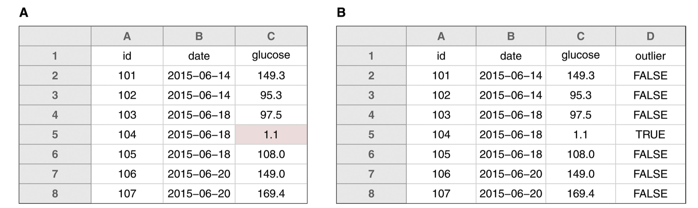

Hao Ye Health Science Center Libraries, University of Florida (updated: 2022-11-01)
Campus Resources
- Academic Research Consulting & Services https://arcs.uflib.ufl.edu/ Consultation and Guidance on Doing Research:
- data management
- open access (and NIH Public Access Policy)
- data science and GIS
- HiPerGator access for student research (without other funding)
- UF Research Computing https://www.rc.ufl.edu/get-started/ ### HiPerGator
- UF super computer, including nVidia GPUs for machine learning ### ResVault
- secure computing environment for working with restricted and confidential data
- Data Science / Computing at UF UF Carpentries offers short workshops on basic computing skills. UF R-Gators affinity club for R users Stats Courses - schedule of stats courses at UF, maintained by Denis Valle
- Motivating Scenarios
- You finished your paper draft and 3 weeks later your PI wants you to change one of the figures from a scatterplot to a histogram.
- You submitted your paper and 3 months later, reviewers want a secondary analysis to check some propert of the data.
- You graduated and 3 years layer, you are writing a grant that will combine your data from a past project with what you are working on now.
- Why be organized?
- Make it easy to switch between projects.
- Be confident that your results are correct.
(or if not correct, at least you know how you got your results)
- Work more effectively with others. (including yourself in the future)
- Share your data and results with others.
(soon to be required as part of Nelson 2022 OSTP memo)
- Learning Outcomes By the end of the workshop, participants will be able to:
- implement file and folder organization in research projects
- use and apply file naming conventions
- understand best practices in structuring data and metadata
- share data in specialist and generalist repositories
File and Folder Organization
- Principles
- Don’t spend time looking for stuff.
- Be consistent in keeping files associated with a project in one folder. ### Why a folder?
- A folder can store multiple files and sub-folders.
- A folder is the basic unit for setting shared permissions on e.g. Google Drive / GitHub / Dropbox
- What to include in your project folder
- project
README
- data (or as little instructions as needed to get the data)
- code
- figures
- manuscript
- The
README
- summary of the project & goals (the why)
- guidance for how to use the project (the how)
- datasets, results, paper file
- who did the experiments
- formatting of the data
- funding acknowledgments / how to cite
- Structuring a Project Folder
- Summary
- keep information about the project
in the same place as the files
- store important details for later usage
- e.g. writing a conference abstract
- make it easy for teammates to help
- make it easy for your PI to find things
Naming Things
- Principles
- You will have LOTS of files.
- You don’t want to spend time opening them to find the right one.
- for a specific subset of data
- for a specific bit of code
- to make changes in just the right spot
- Examples (NOT SO GOOD)
- Examples (BETTER)
- Machine-Readable
- Avoid spaces, punctuation, accented characters, mixing upper and lowercase.
- some computers don’t distinguish between
README and readme (others do!)
- simpler names are easier to remember
- Separate words with hyphens
'-'
- Separate groupings with underscores
'_'
- Human-Readable
- Filenames do not need to be 100% thorough
- Filenames should help you find it later when you need to
- For code, use nouns for data objects and verbs for actions:
load-data.Rdata_mtcars.csvmake-scatterplot.R
- Using Default Ordering
- Files are usually sorted alphabetically
- Left-pad with numbers to impose an order on files:
- e.g.
01_load-data.R, 02_process-data.R
- Use RFC-3339 for dates:
-
YYYY-MM-DD format (alphabetical sorting makes it chronological, too!)
- Example
filename format:
{site}_{date}_{type of data}
- Summary Choose names for file that:
- don’t cause issues for computer
- are descriptive for humans
- sort nicely Be consistent! (at least within an individual project)
Structuring Tabular Data (e.g. spreadsheets)
- Principles Make it easy for anyone to work with your data:
- Structure data for analysis (i.e. “Tidy Data”)
- Don’t use text-formatting to store information!
- Keep a copy of raw data for reproducibility
- Include a Data Dictionary
- Tidy Data Properties of tidy data:
- each column is a variable
- each row is an observation
- each table is a single observational unit
- Common issues
- storing data values in column headers
- e.g. treatment values, dates of sampling
- storing variables in rows
- when adding more data, you should only increase # of rows
(the columsn are fixed)
- keeping too much data in one table
- e.g. different types of measurements
- Example: column labels encoding data
- wide-format data |name|Thin Mints|Samoas|Tagalongs| |–|–|–|–| |A|4|0|0| |B|2|0|2| |c|0|3|1|
- Example: re-structured columns
- long-format data |name|flavor|boxes| |–|–|–| |A|Thin Mints|4| |B|Thin Mints|2| |B|Tagalongs|2| |C|Samoas|3| |C|Tagalongs|1|
- Example: multiple observational units |name|address|flavor|boxes| |–|–|–|–| |A|3828 Piermont Dr|Thin Mints|4| |B|221B Baker St|Thin Mints|2| |B|221B Baker St|Tagalongs|2| |C|124 Conch St|Samoas|3| |C|124 Conch St|Tagalongs|1|
- Example: separate tables .pull-left[ |name|flavor|boxes| |–|–|–| |A|Thin Mints|4| |B|Thin Mints|2| |B|Tagalongs|2| |C|Samoas|3| |C|Tagalongs|1|] .pull-right[ |name|address| |–|–| |A|3828 Piermont Dr| |B|221B Baker St| |C|124 Conch St|]
- Spreadsheet Formatting
- for missing data, use empty cells or
'NA'
- be careful about
'NA' for certain types of data (e.g. country code for “Namibia”)
- do NOT space out data with empty rows/columns
- do NOT use text formatting (e.g. bold/italics) to store information
- WATCH OUT: Excel LOVES to convert data into a date format
- Example: spreadsheet formatting  Instead of highlighting the cells with outliers, encode outlier status as its own column.
- Data Files
- store raw data for reproducibility
- save a separate cleaned-up version
- and/or use scripts to clean/wrangle raw data
- document processing steps in code or text
- Data Dictionary
- define your rows and columns
- e.g. Are the rows …
- individual subjects
- OR data collection sessions
- OR individual samples from a measurement device
- define codes, categories, acronyms
- define relationships between multiple tables
- Example Data Dictionary .compact-table[ |name|plot_name|group|description|type| |–|–|–|–|–| |mouse|Mouse|demographic|Animal identifier|text| |sex|Sex|demographic|Male (M) or Female (F)|factor| |sac_date|Date of sac|demographic|Date mouse was sacrificed|date| |partial_inflation|Partial inflation|clinical|Indicates if mouse showed partial pancreatic inflation|logical| |coat_color|Coat color|demographic|Coat color, by visual inspection|factor| |crumblers|Crumblers|clinical|Indicates if mouse stored food in their bedding|logical| |diet_days|Days on diet|clinical|Number of days on high-fat diet|numeric|] (modified from Figure 9 of Broman & Woo “Data Organization in Spreadsheets”)
Sharing Data
- Principles
- data sharing is becoming more standardized
- to be required by most Federal funders (if not already)
- data sharing IS extra work
- but much less if you are already organized
- doing it WELL can increase your impact
(other researchers can use it, or build collaborations based on shared use of data)
- FAIR
- Guidelines for Scientific Data (but which also apply to other outputs)
- Findable
- Accessible
- Interoperable
- Reusable
- Findable
- Can humans and machines find the data?
- use metadata that describes the content
- use metadata that helps people find it Metadata is data that describes or gives information about other data e.g. hashtags indicate that a tweet is about a particular subject (such as a conference), and enable others to easily find many tweets about that subject
- Accessible
- there should be minimal barriers
- e.g. no proprietary interfaces or software required
- share your data in a dedicated repository
- use established methods to authenticate access to protected or private data
- DOI = Digital Object Identifier
- format
10.NNNN/{suffix}-
NNNN identifies the registrant
-
{suffix} identifies the object
- e.g.
10.5281/zenodo.3892183
- DOI Properties
- DOIs are permanent
- the object and metadata record are archived
- unambiguous
- each DOI links to a unique object, and will only ever link to that object
- Interoperable
- use a common, shared file format
- use a data standard for organizing and structuring data
- it is possible that no such standard exists for your field!
- use a metadata standard for attributes
- Reusable
- help researchers identify whether it is suitable for their usage
- use a legal license that enables re-use
- e.g. CC-BY or CC-0
-
don’t use a code license, e.g. MIT
- include attribution and a description of how to cite the data
- FREE Repositories
- GitHub GitHub is a platform designed primarily for collaborative open source software development.
- Many researchers use it to store data or research projects, and to collaborate!
https://uf-repro.github.io/friendly-github-intro/
- GitHub is not archival.
- No guarantee for continued free access
- The owner of the data or code could change it, move it, or delete it
- Summary When in doubt, look at example publications in your field!
- What keywords did they use?
- How did they structure the data?
- if the data is not tidy, you don’t have to follow along
- using the same or similar column labels could be effective
Thanks
- Contact me for additional questions or consultation requests.
- Check my libguide for other lesson materials.